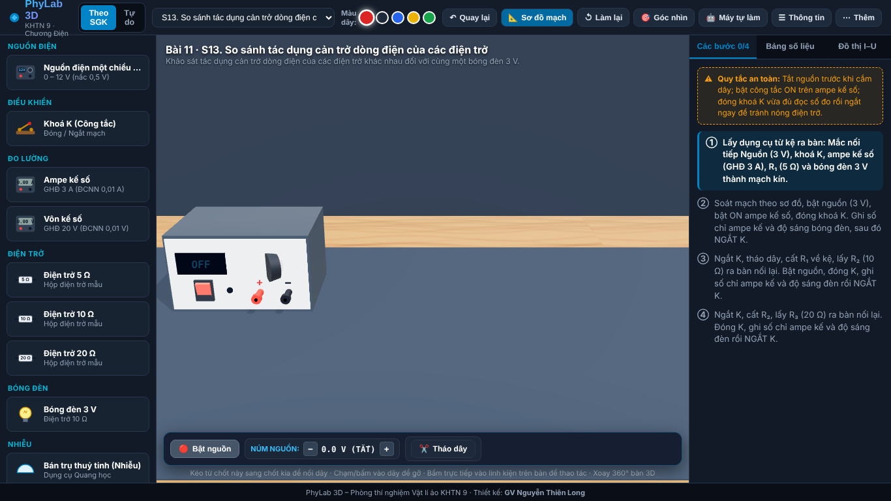
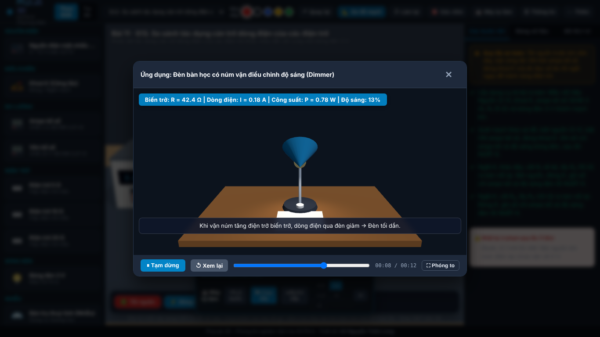
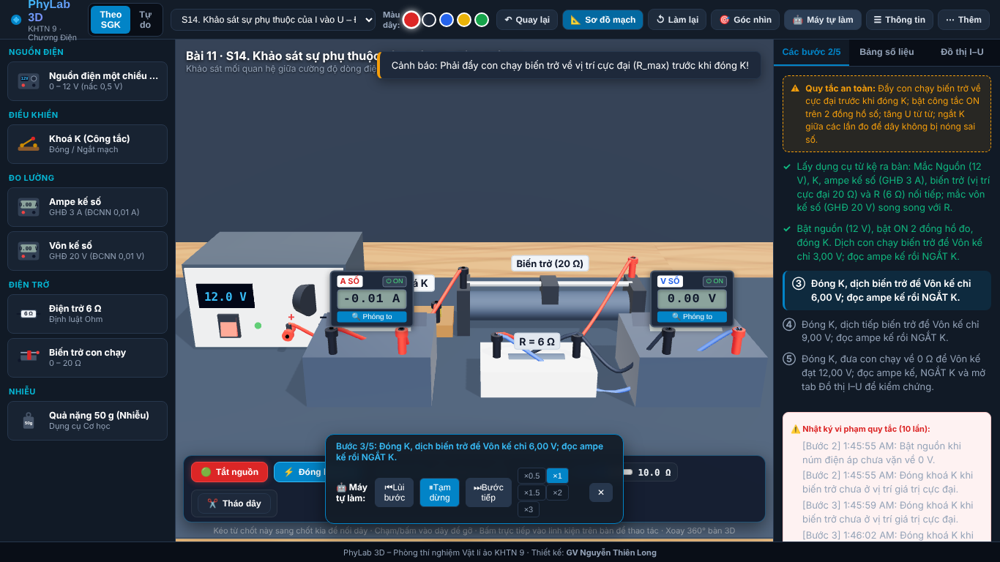
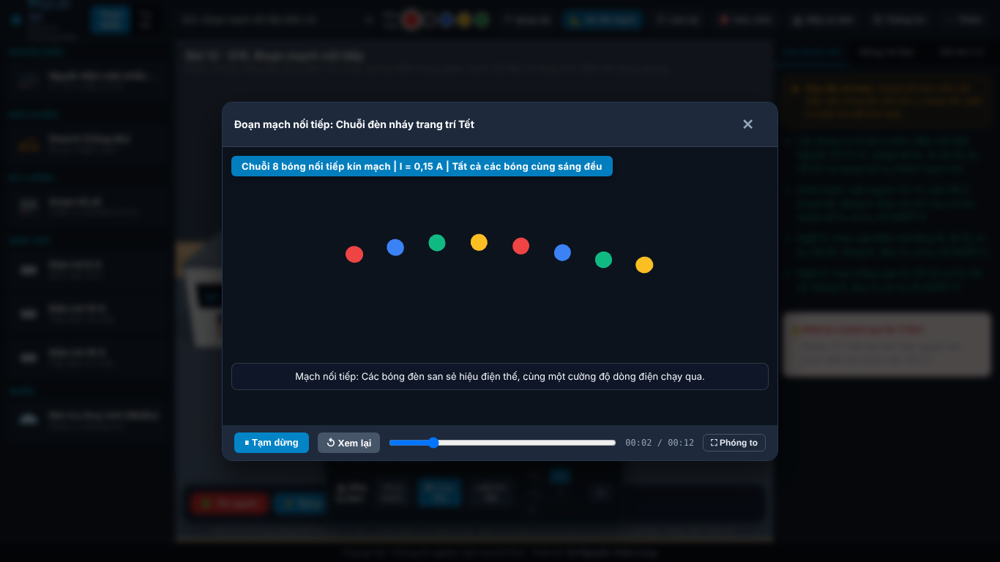
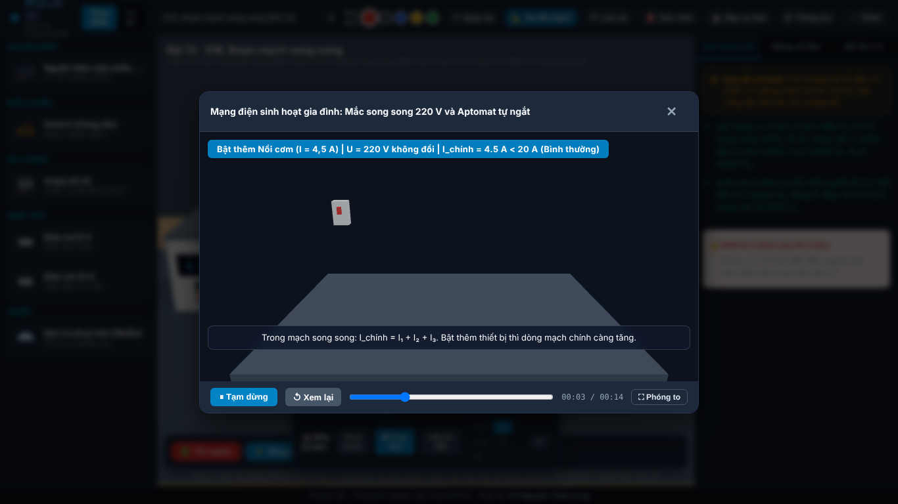
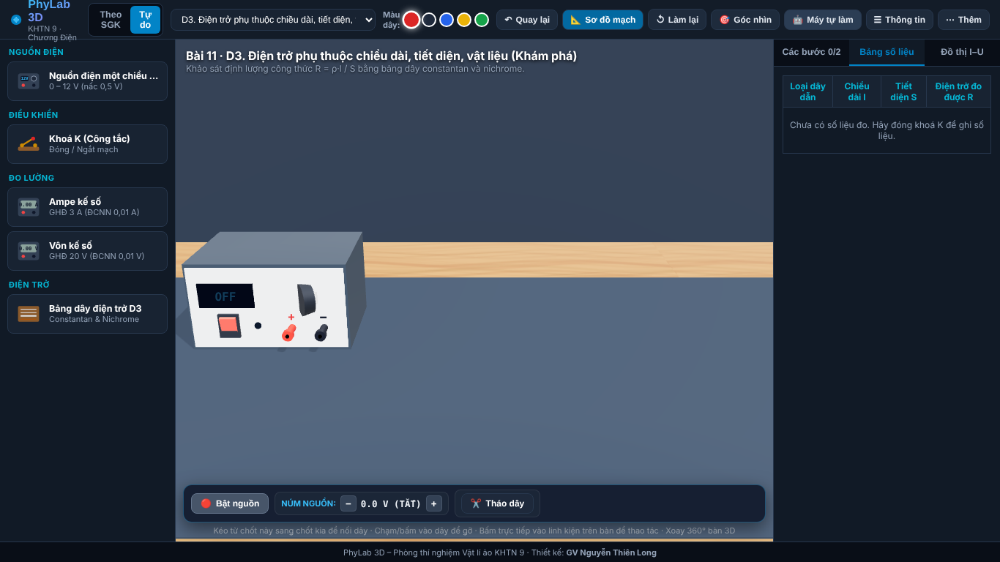
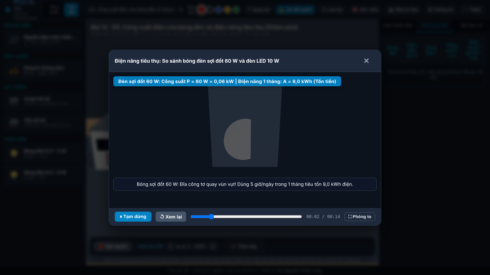
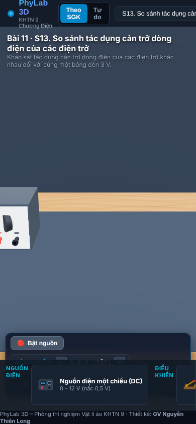

PhyLab 3D – Đợt 1 (Chương Điện) – ảnh chụp thật từ app
Ảnh 1. Máy tính – Mở bài S13 (Bài 11): bàn trống chỉ có nguồn, kệ dụng cụ bên trái, các bước bên phải

Ảnh 2. Máy tính – S13 sau khi bấm "Máy tự làm" ~36 giây

Ảnh 3. Máy tính – S14 Định luật Ohm đang chạy "Máy tự làm" (ampe kế số, vôn kế số, biến trở, nhật ký vi phạm)

Ảnh 4. Máy tính – S15 Đoạn mạch nối tiếp, "Máy tự làm"

Ảnh 5. Máy tính – S16 Đoạn mạch song song, "Máy tự làm"

Ảnh 6. Máy tính – Chế độ Tự do D3: điện trở phụ thuộc chiều dài, tiết diện, vật liệu

Ảnh 7. Máy tính – Chế độ Tự do D5: công suất bóng đèn
Ảnh 8. Máy tính – Video ứng dụng sau kết luận D5 (so sánh đèn sợi đốt 60 W và LED 10 W)

Ảnh 9. Điện thoại 390×844 – Mở app

Ảnh 10. Điện thoại 390×844 – S13 sau khi bấm "Máy tự làm"